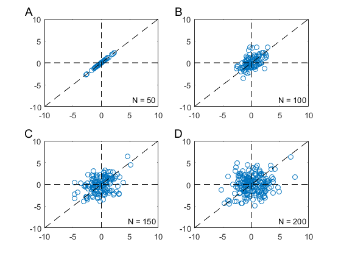

cpsPlotTools
Demonstrations of the Capsaicin (CPS) Plot Tools.
Contents
Format multi panel scatter plots
Create 4 panels of bivariate dummy data with lettering to identify the panels, scaled axes to aid comparison across panels, and added annotation and reference lines.
cpsFindFig('Ex1'); % Find or create a figure by name clf; for i=1:4 % Create a scatter plot subplot(2,2,i,'align'); dumdat = mvnrnd([0;0],[i 1;1 i],50*i); plot(dumdat(:,1),dumdat(:,2),'o'); cpsText(['N = ' num2str(50*i)] ... % Add annotation ,'Location','BottomRight'); end cpsLabelPanels; % Add lettering cpsUnifyAxes('within','between'); % Scale the axis limits cpsRefLine(gcf,'+','/','k--'); % Add dashed reference lines to all Axes
Unify color axes to aid comparison
It is often desirable to scale the color axis limits of related data to their combined global minimum and maximum to aid comparison.
cpsFindFig('Ex2' ... % Open a Figure named Ex2 ... ,'Position',[10 100 560 200]); % ... with reduced height clf subplot(1,3,1); contourf(peaks-50); axis square subplot(1,3,2); contourf(peaks*4); axis square subplot(1,3,3); % Add a single ... colorbar('West'); % ... colorbar ... axis off equal square % ... for both panels. cpsUnifyAxes('C'); % Scale the color axes cpsLabelPanels('12 ' ... % Number the first 2 panels ... ,'Color','m','Location','inside'); % ... with some added style.